Project 5: Fun With Diffusion Models!
Part A: The Power of Diffusion Models
Overview
In this project, I experiment with pre-trained diffusion models using the DeepFloyd IF Stage I model. I implement forward and reverse diffusion processes, build sampling loops, and apply them to tasks such as denoising, sampling from noise, image-to-image editing, inpainting, and creating optical illusions like visual anagrams and hybrid images.
Part 0: Setup
Part 0.1: Gaining Access to DeepFloyd
I first set up the environment needed to run DeepFloyd IF by installing all required packages in Google Colab (including Diffusers,
Transformers, Mediapy, and Accelerate), and configured my device to use CUDA. I then loaded the two DeepFloyd IF stages from HuggingFace
using half-precision (fp16) weights to fit within GPU memory. Stage I produces 64×64 image latents, and Stage II upscales them to 256×256.
Both models were moved to the GPU for faster sampling.
Part 0.2: Playing with Text Prompts
Before generating images, I loaded my prompt embeddings from the provided .pth dictionary and inspected the available text prompts. Using these
embeddings, I sampled images from Stage I and Stage II with a fixed random seed (seed = 100) to ensure reproducibility. I experimented with different
denoising budgets—starting with num_inference_steps = 20 for fast results and later increasing to 40 for higher-quality generations. This helped me
understand how the prompt conditioning and step count influence the final image quality.
Random Seed: 100
Prompt: "The Chicago Christmas tree lighting ceremony"
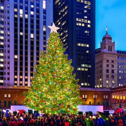
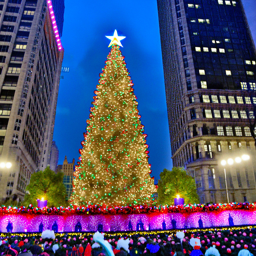
Prompt: "A picture of a bear roasting a marshmallow"
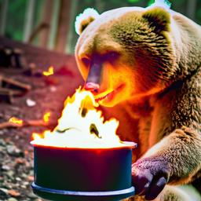
Prompt: "Einstein riding a scooter to class in Berkeley"
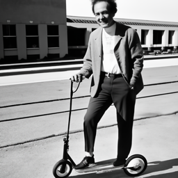
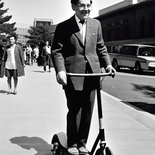
Part 1: Sampling Loops
1.1: Implementing the Forward Process
In this part, I implemented the forward diffusion process, which gradually adds noise to a clean image according to the schedule defined by
ᾱt. Using the provided alphas_cumprod array, I computed the noisy image using the standard diffusion equation:
xt = sqrt(ᾱt) · x0 + sqrt(1 - ᾱt) · ε,
where ε ~ N(0, I). My forward(im, t) function samples Gaussian noise with
torch.randn_like and applies this formula to generate progressively noisier versions of the Campanile image.
I visualized the results at timesteps 250, 500, and 750, showing how the structure fades as noise increases.
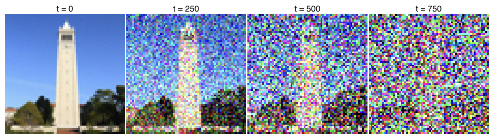
1.2: Classical Denoising
For the classical denoising step, I applied a Gaussian blur filter to each noisy image using
torchvision.transforms.functional.gaussian_blur. By tuning the kernel size and sigma, I produced smoothed versions of the inputs.
While the blur removes some high-frequency noise, it also washes out important details, especially at higher timesteps.
These results demonstrate the limitations of traditional filtering methods when attempting to reverse the forward diffusion process.
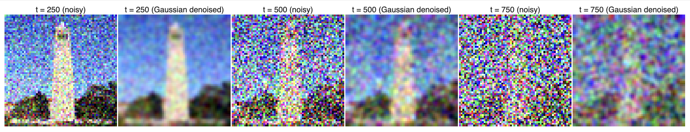
1.3: One-Step Denoising
In this part, we used the pretrained DeepFloyd UNet to perform a single denoising step on the noisy Campanile images.
For each timestep t ∈ {250, 500, 750}, I first generated a noisy image xt using the forward process from Part 1.1.
Then, I passed this noisy image, the timestep, and the null prompt embedding into stage_1.unet, which predicts the Gaussian noise present in xt.
Using the diffusion equation, I estimated the original clean image by removing the scaled noise term:
x̂0 = (xt − √(1 − ᾱt) ε̂) / √(ᾱt).
Finally, I visualized the original image, the noisy image, and the one-step denoised estimate side by side.
This experiment demonstrates that a single UNet denoising step can partially recover structure, though the reconstruction becomes less accurate at larger timesteps.
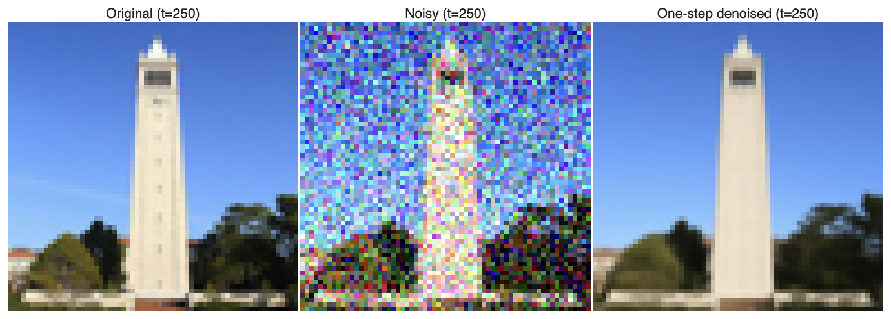
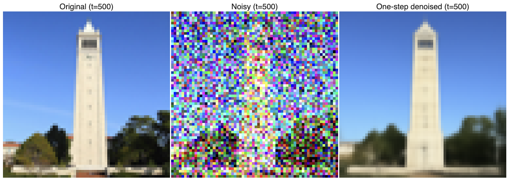
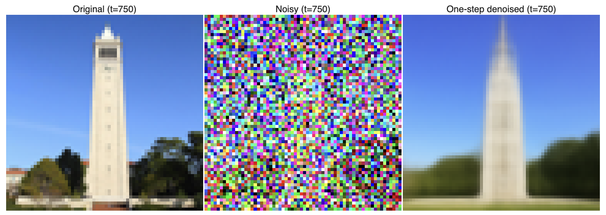
1.4: Iterative Denoising
In this section, I implemented the full DDPM reverse process to iteratively denoise an image.
Instead of applying the UNet once (as in Part 1.3), I stepped backward through a list of
timesteps strided_timesteps, starting from a noisy Campanile image. At each step,
I used the DeepFloyd UNet to predict the noise in the current image, converted that prediction
into an estimate of the underlying clean image, and then combined the two to form a slightly
less noisy image at the previous timestep. I also added the learned variance using the
scheduler’s variance prediction, which injects the correct amount of randomness at each step.
To visualise the process, I saved the intermediate images every 5 iterations. The results show the Campanile gradually emerging from pure noise as the model walks back along the diffusion trajectory. Finally, I compared four images side by side: the original noisy input, the final iterative denoising result, the one-step UNet denoising result from Part 1.3, and a simple Gaussian-blurred baseline. Iterative denoising produced the sharpest and most realistic image, while the one-step and blurred outputs remained noticeably more washed out and noisy.
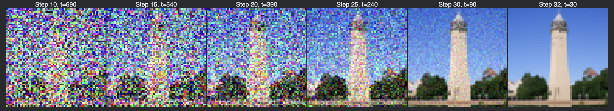
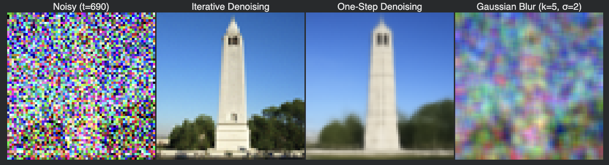
1.5: Diffusion Model Sampling
In Part 1.5, I reused the same iterative denoising function to generate images entirely from
scratch. Instead of starting from a noisy Campanile, I initialized the process with pure
Gaussian noise (torch.randn) and set i_start = 0, so the model
performed the full reverse diffusion chain from the noisiest timestep back to a clean image.
I conditioned the UNet on the text embedding for the prompt
"a high-quality photo", so the generated images were guided toward that
concept.
I repeated this sampling procedure five times and displayed all five outputs. Although the samples are not perfect (since we have not yet applied classifier-free guidance), they are coherent and resemble natural photographs, demonstrating the core idea of diffusion sampling: starting from random noise and transforming it into meaningful images through a sequence of learned denoising updates.
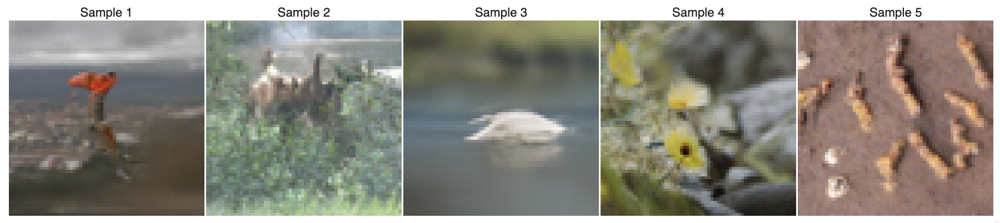
1.6: Classifier-Free Guidance (CFG)
In Part 1.6, I extended my iterative denoising pipeline to support
Classifier-Free Guidance (CFG), which improves sample quality by combining conditional
and unconditional noise predictions. I created two prompt embeddings (a conditional one for
"a high quality photo" and an unconditional one for the empty string), and ran the UNet
twice at each denoising step. Using the equation
ε = εu + γ(εc − εu),
I computed a guided noise estimate that emphasises features related to the text prompt.
I then substituted this guided noise into the same DDPM update rules used earlier, requiring only minimal changes to the denoising loop. With a guidance scale of γ = 7, the model produced noticeably sharper and more coherent samples compared to the unguided generation in Part 1.5.
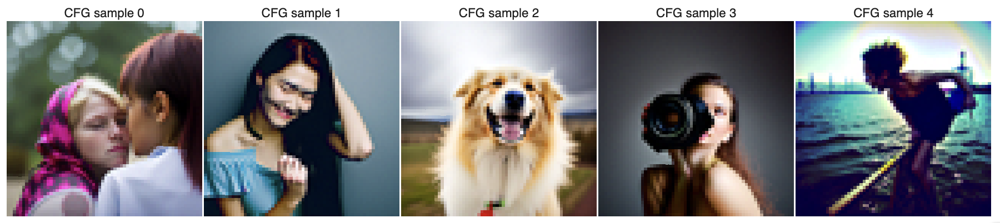
1.7: Image-to-Image Translation and Variants
In part 1.7, I applied the SDEdit-style workflow to edit the Campanile image. I first added different amounts of noise at timesteps
[1, 3, 5, 7, 10, 20] using the forward diffusion process, then denoised each version starting from that same index using my
iterative_denoise_cfg function. Since classifier-free guidance (CFG) blends conditional
("a high quality photo") and unconditional noise estimates, the model reconstructs a natural-looking image while
preserving the structure of the original.
The results show a smooth progression: low noise levels closely match the input image, while higher noise levels allow stronger edits as the model hallucinates more detail. This demonstrates how diffusion models can perform controlled, progressively stronger edits on real images.
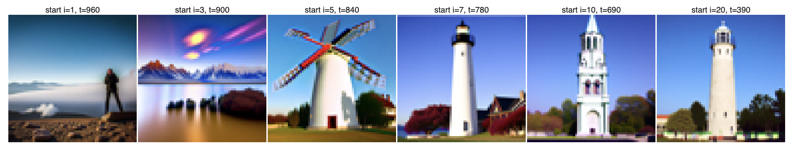
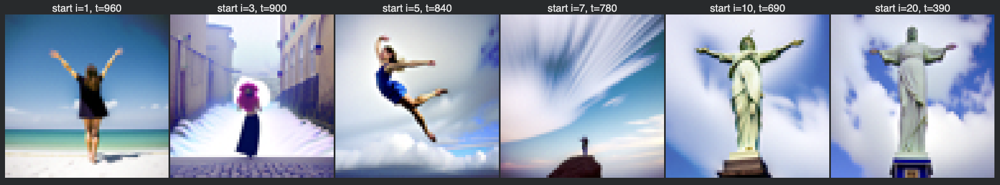
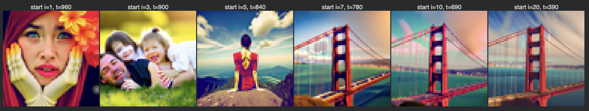
1.7.1: Hand-Drawn and Web Images
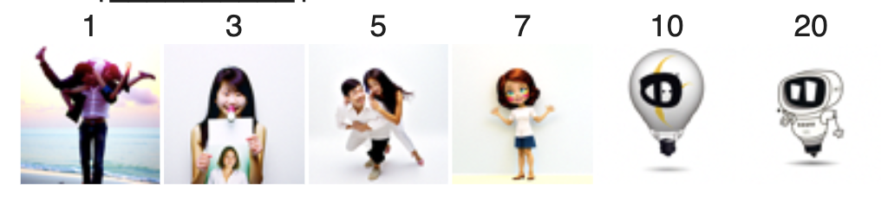
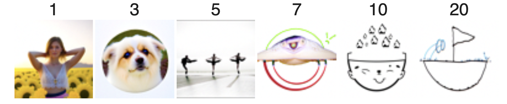
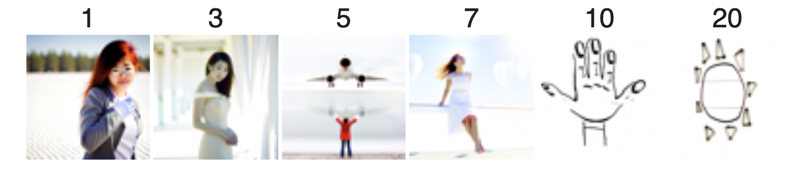
1.7.2: Inpainting
For inpainting, I followed the RePaint-style update from Equation (5), where the model combines its prediction with the original image according to xt = m · xtmodel + (1 − m) · xtorig. At each denoising step, only the masked region is regenerated while the unmasked region is restored from the noised original image. Using this method, I was able to naturally fill in the missing top portion of the beetle image based on the prompt “a high quality photo.”
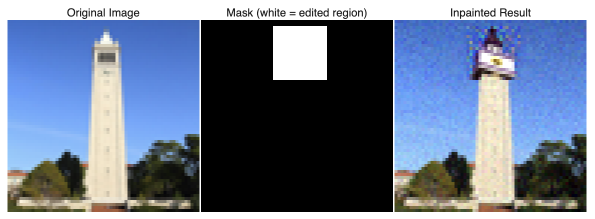
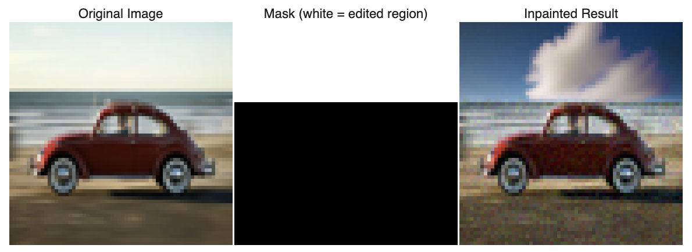
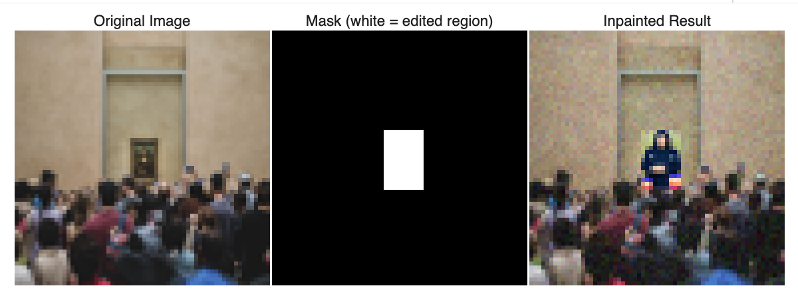
1.7.3: Text-Conditional Image-to-Image
In Part 1.7.3, I extended my image-to-image translation pipeline by conditioning the denoising process on descriptive text prompts. Instead of guiding the projection back to the natural image manifold using only "a high quality photo", I replaced the conditional embedding with arbitrary prompts to steer the diffusion model toward edits that reflect both the original image structure and the new textual concept.
To implement this, I reused my iterative_denoise_cfg function and simply swapped in new prompt embeddings. I then ran the forward-diffusion
step to different noise levels (corresponding to start indices [1, 3, 5, 7, 10, 20]) and denoised from those points while applying classifier-free
guidance. Lower starting indices preserved more of the original content, while higher ones allowed more dramatic transformations. This produced a
smooth progression of edits that increasingly blended the input image with the semantics of the text prompt.
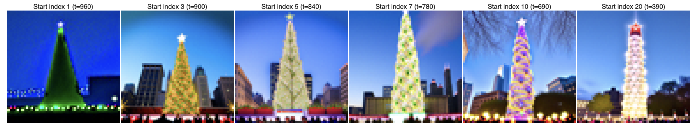
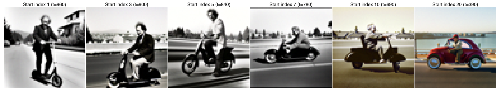
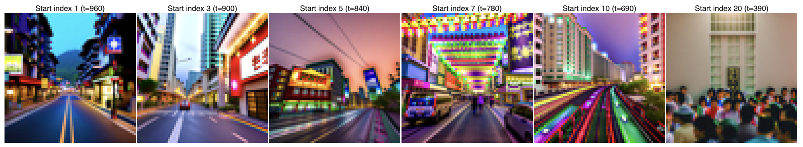
1.8: Visual Anagrams
In Part 1.8, I implemented make_flip_illusion by generating two guided noise estimates at each denoising step, one conditioned on the
upright prompt and one on the flipped-image prompt. For the second estimate, I flipped the current noisy image upside-down, ran the UNet with the second
prompt, then flipped the predicted noise back. Averaging these two noise estimates produced a single blended prediction that encourages the image to
resemble prompt p₁ when upright and p₂ when flipped. I then fed this averaged noise into the usual DDPM update equations to iteratively refine the image.
This works because the diffusion model responds consistently to flipped inputs, so by combining upright and flipped noise estimates, we effectively bake two different semantic interpretations into one image, creating a visual anagram that changes meaning when rotated 180°.
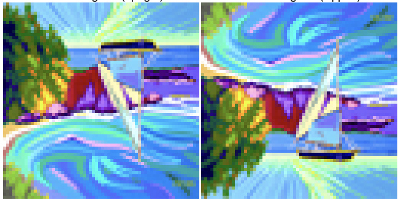
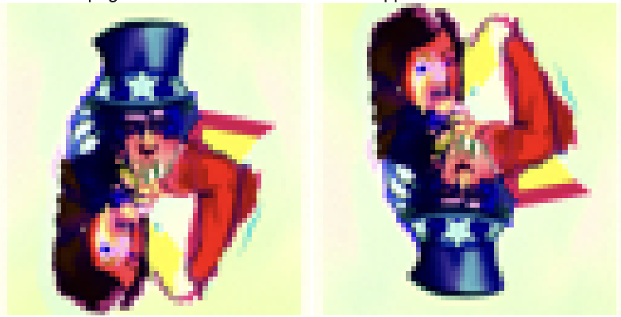
1.9: Hybrid Images
In Part 1.9, I implemented hybrid images by adapting the classical hybrid-image idea to the diffusion noise domain. At each denoising step, I generated two guided noise estimates using different text prompts, p₁ and p₂. I then applied a Gaussian blur to extract the low-frequency component of the first estimate and computed the high-frequency component of the second by subtracting its blurred version. Combining these two filtered noise fields produced a composite noise estimate that blends global structure from p₁ with fine details from p₂. Using this hybrid noise inside the DDPM update rule generated images whose overall appearance follows one prompt while subtly incorporating texture and detail from the other.
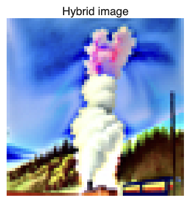
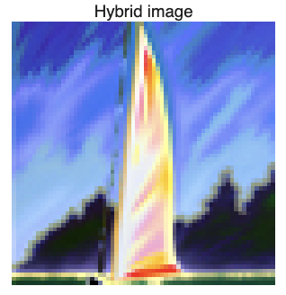
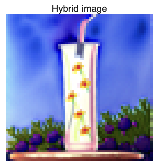
Part B: Flow Matching from Scratch
Overview
In Part B, I switch from pre-trained diffusion models to training my own UNet-based models on MNIST. I first build a single-step denoiser, then extend it into a time-conditioned flow-matching model, and finally add class conditioning to generate specific digits. This section follows the structure of the spec and uses MNIST as the primary dataset.
Part 1: Training a Single-Step Denoising UNet
Part 1.1: Implementing the UNet
In Part 1.1, I implemented the core building blocks of a standard UNet—
Conv, DownConv, UpConv, Flatten,
Unflatten, and the composed ConvBlock,
DownBlock, and UpBlock. Each component mirrors the
operations in the UNet diagram: downsampling halves the spatial resolution,
upsampling restores it, and skip connections preserve high-resolution features.
Together, these modules form the encoder–bottleneck–decoder structure
typical of UNet architectures and provide the foundation for more advanced
diffusion-model UNets used later in the project.
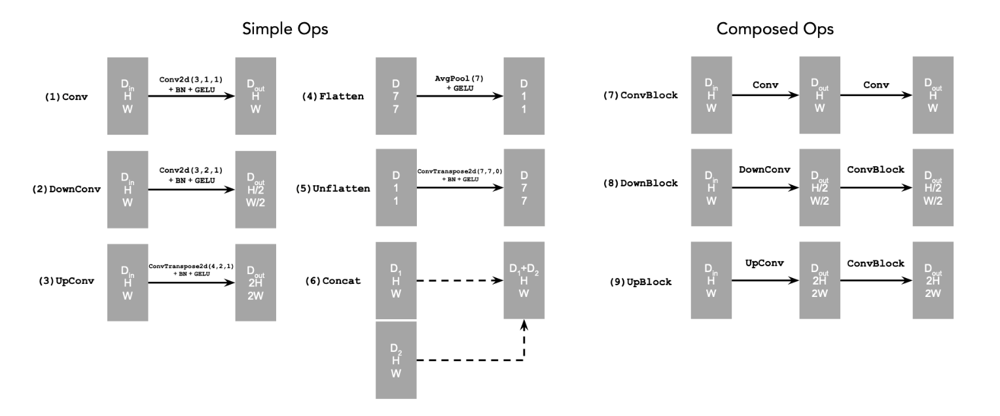
Using these components, I then built an Unconditional UNet, which follows the same hierarchical layout but removes all external conditioning (no timestep or text embeddings, no attention). The network takes only a noisy MNIST image as input and learns to reconstruct the clean digit. Unlike the diffusion UNet—which integrates conditioning signals and feature modulation— this unconditional UNet is a compact, purely convolutional denoiser with skip connections and a small bottleneck, making it well suited for simple MNIST reconstruction.
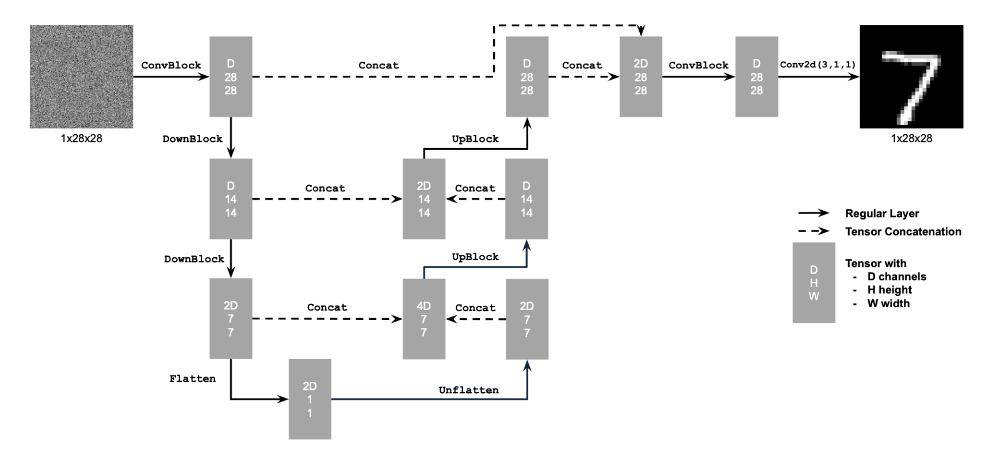
Part 1.2: Using the UNet to Train a Denoiser
In Part 1.2, I implemented a visualization of the noising process used to
train the unconditional UNet denoiser. For several MNIST digits, I added
Gaussian noise at progressively increasing levels
σ ∈ {0.0, 0.2, 0.4, 0.5, 0.6, 0.8, 1.0}.
The resulting figure displays the clean images in the top row and shows how
each digit becomes increasingly corrupted as σ grows. Low noise levels retain
recognizable structure, while high noise levels produce almost pure noise.
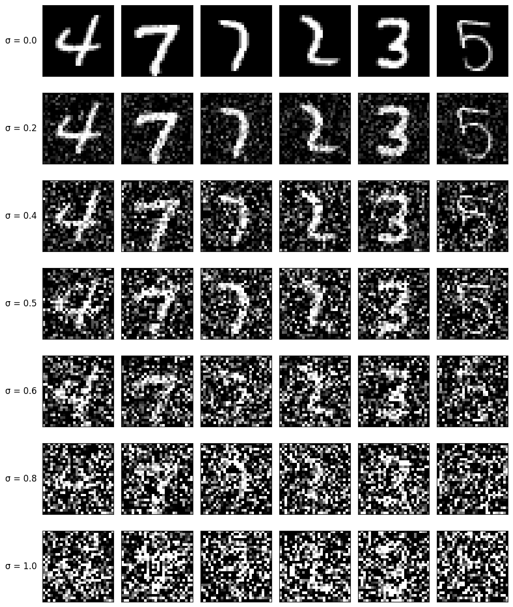
Part 1.2.1: Visualizing the Noising Process -- Training at σ = 0.5
To train the MNIST denoiser, I built a full pipeline around the unconditional UNet from Part 1.1.
Using a fixed noise level of σ = 0.5, each clean MNIST image was noised on the fly via
the forward process z = x + σ ε, so the model saw fresh noise every epoch.
I optimized a mean squared error loss between the denoised prediction and the clean target using Adam
with a learning rate of 1 × 10-4, training for 5 epochs and saving checkpoints
after the 1st and 5th epoch for later visualization.
The training loss curve showed smooth, consistent decay, indicating stable learning. When evaluated on noisy test digits, the 1-epoch model produced blurry but recognizable shapes, while the 5-epoch model generated significantly sharper digits with clearer structure. This confirms that the UNet successfully learned to map noisy inputs back to clean MNIST images and improved steadily with more training.
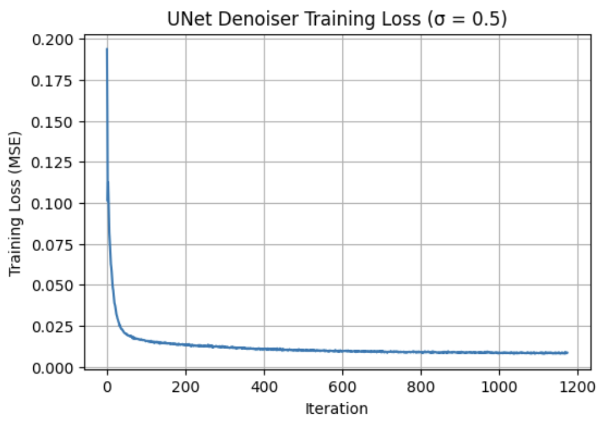
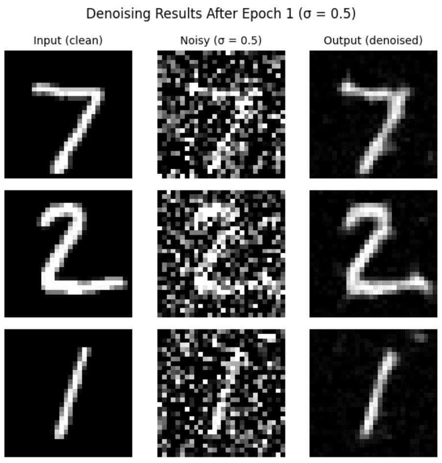
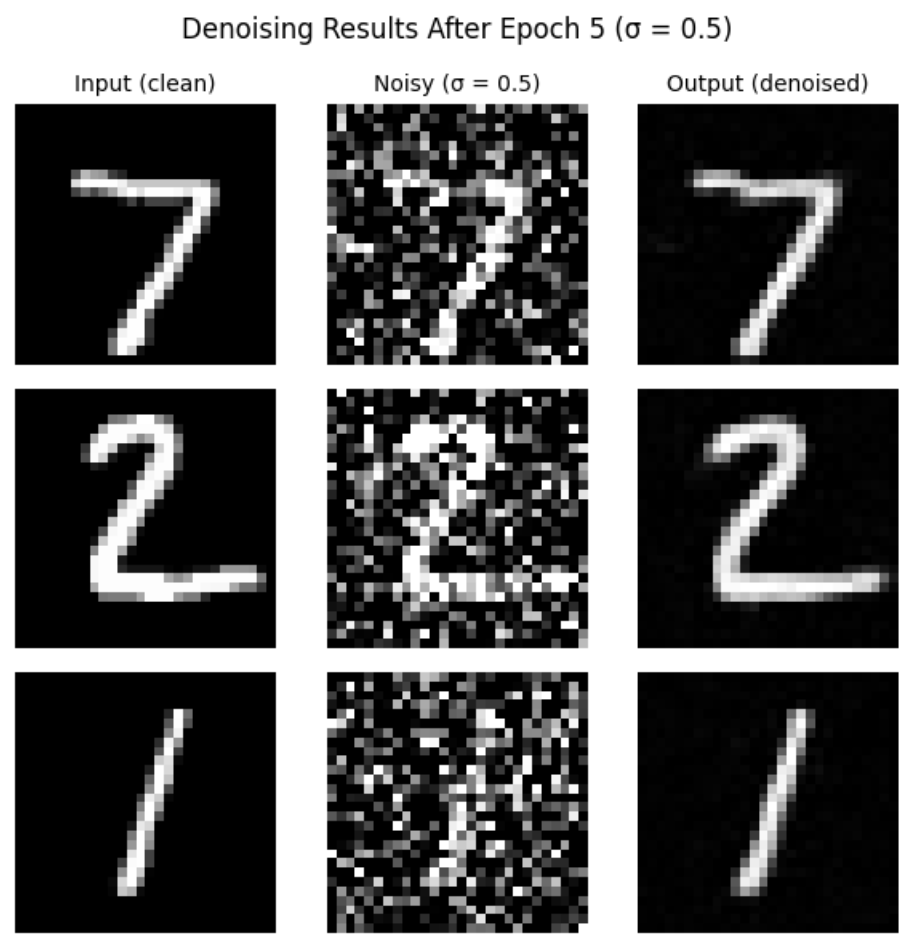
Part 1.2.2: Out-of-Distribution Testing
To study how well the denoiser generalizes beyond its training noise level, I reused the trained UNet
(trained only on σ = 0.5) and evaluated it on test images corrupted with a range of
noise levels σ ∈ {0.0, 0.2, 0.4, 0.5, 0.6, 0.8, 1.0}. For each noise level, I generated
noisy inputs and passed them through the fixed model, visualizing the clean, noisy, and denoised results
side by side.
The visualizations show that the denoiser works best near the training level (σ ≈ 0.5), where it produces sharp, accurate reconstructions. At lower noise (σ = 0.0–0.2), it slightly oversmooths the digits, and at higher noise (σ = 0.8–1.0), it tends to hallucinate digit-like shapes instead of faithfully recovering the input. This highlights that the model is strongly biased toward the noise distribution it was trained on and has limited robustness far outside that range.
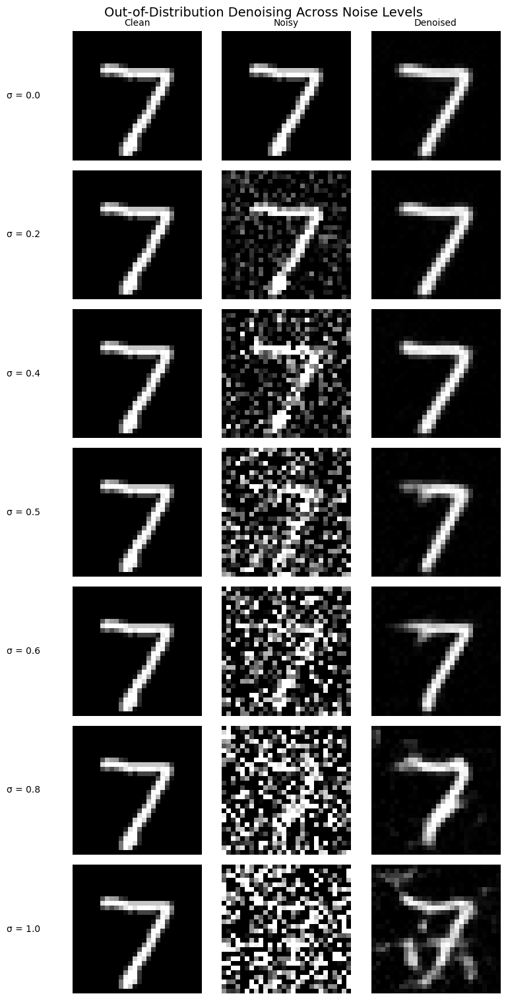
Part 1.2.3: Denoising Pure Noise
To probe the denoiser’s learned prior, I fed pure Gaussian noise (σ = 1.0) into the trained
UNet and visualized its outputs after the 1st and 5th training epochs. The model was only ever trained to
map noisy MNIST digits back to clean digits, so it has never seen inputs without an underlying digit structure.
The results show clear patterns: after a single epoch, the network already produces blurry digit-like blobs, and by the 5th epoch, the outputs resemble sharper, more recognizable MNIST digits, despite the input being pure noise. This behavior indicates that the UNet has learned a strong implicit prior over the MNIST manifold. When there is no real signal to denoise, it “hallucinates” the kinds of digit-shaped patterns it expects, revealing that it is doing more than simply removing noise.
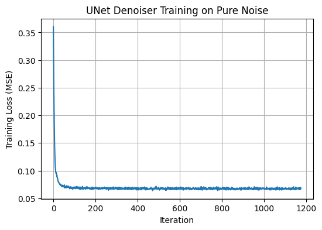
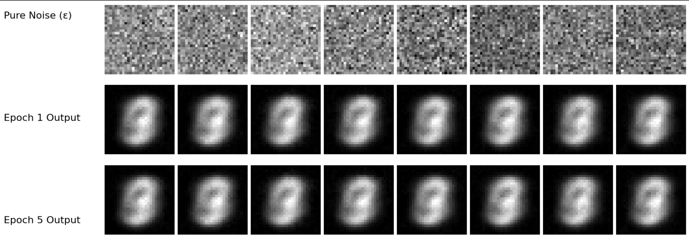
Part 2: Training a Flow Matching Model
Since single-step denoising alone is not ideal for generation, I next train a flow-matching model. The idea is to learn a time-conditioned velocity field that transports pure noise to clean digit images through a sequence of intermediate states.
Part 2.1: Adding Time Conditioning to the UNet
To incorporate time into the UNet, we condition the model on the scalar diffusion timestep t by injecting a learned embedding into key intermediate layers. Because t carries no spatial structure, we map it through a small fully connected module (FCBlock), which consists of two linear layers with a GELU in between. This produces a feature vector whose dimension matches the UNet feature maps at the bottleneck and early upsampling stages. We then broadcast this vector and modulate the corresponding feature maps through element-wise multiplication, allowing the network to adapt its denoising behavior as a function of diffusion time. The FCBlock therefore serves as a lightweight mechanism to transform a scalar timestep into a meaningful conditioning signal that guides the UNet throughout the denoising process.
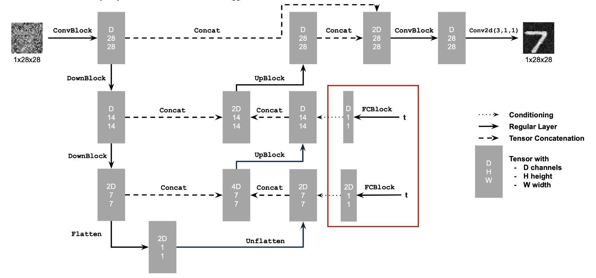
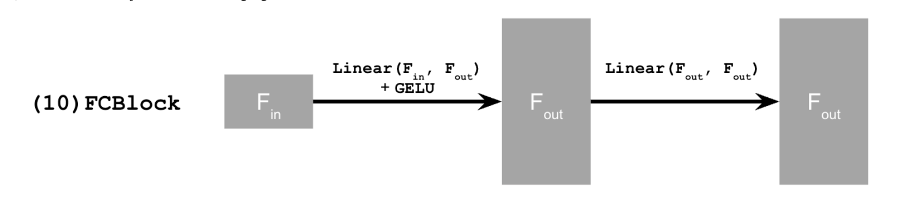
Part 2.2: Training the Time-Conditioned UNet
In Part 2.2, we trained the time-conditioned UNet to predict the flow between a noisy image
xt and its clean counterpart x1 using the flow-matching objective.
For each batch of MNIST images, we sampled a random timestep t ∼ U(0, 1), generated a noisy
interpolation xt = (1 - t)x0 + t x1, and passed
xt and t into our conditioned UNet through the
TimeConditionalFM wrapper. The model’s predicted flow was compared to the ground-truth
flow with an MSE loss, and we optimized the network using Adam with an exponential learning-rate
decay schedule. Training was performed over shuffled mini-batches of size 64, and we recorded the
per-iteration losses to visualize convergence across the 10 training epochs.
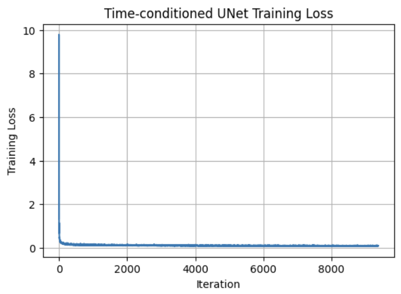
Part 2.3: Sampling from the Time-Conditioned UNet
In Part 2.3, we implemented the time-conditioned sampling UNet algorithm to sample from our trained time-conditioned UNet by transforming pure Gaussian noise into recognizable MNIST digits. Starting from x0 ∼ &mathcal;N(0, I), the algorithm iteratively applies the update xt + Δt = xt + Δt · uθ(xt, t), using the UNet’s predicted flow to gradually denoise the image as t progresses from 0 to 1.
Running this procedure after epochs 1, 5, and 10 produced samples of increasing quality, demonstrating that the learned flow field effectively guides noisy inputs toward the data manifold and enables the model to generate new, coherent digit images.
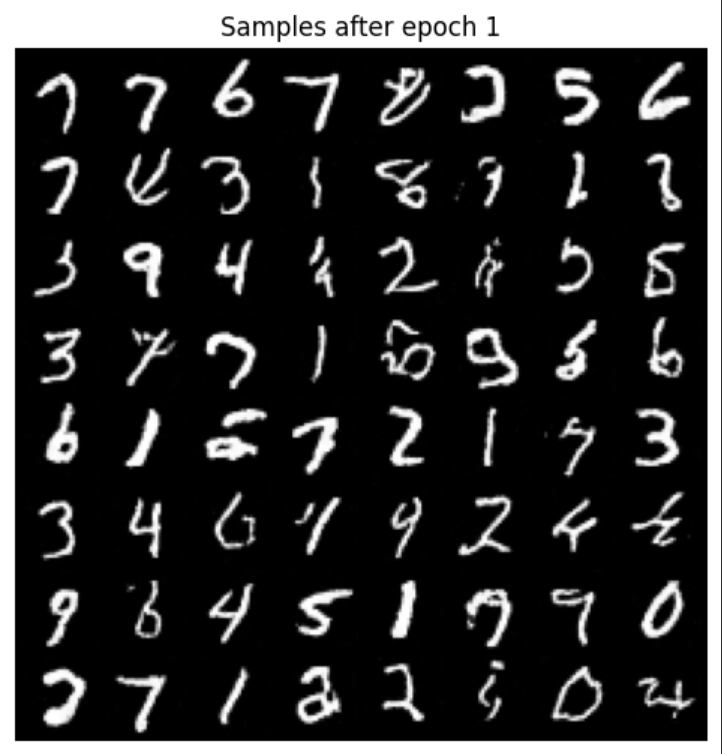
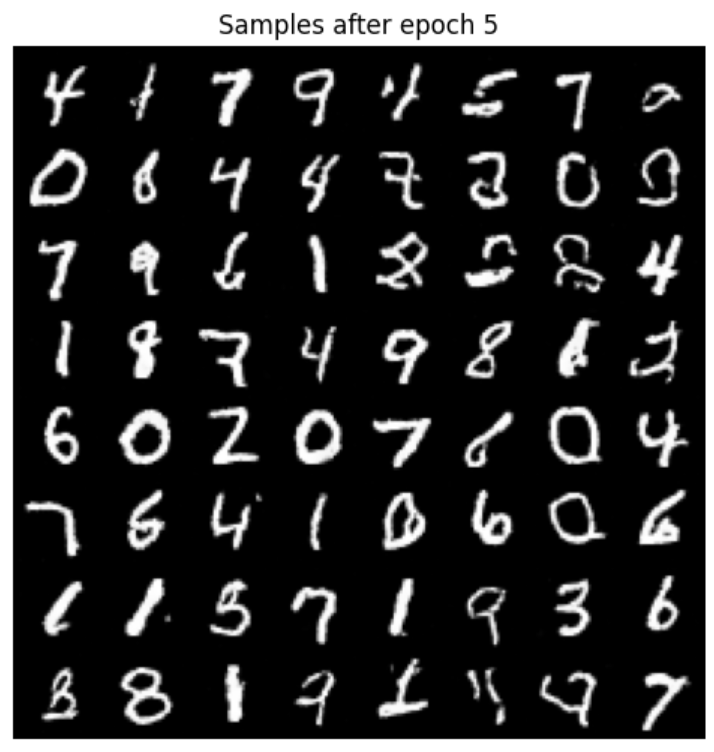
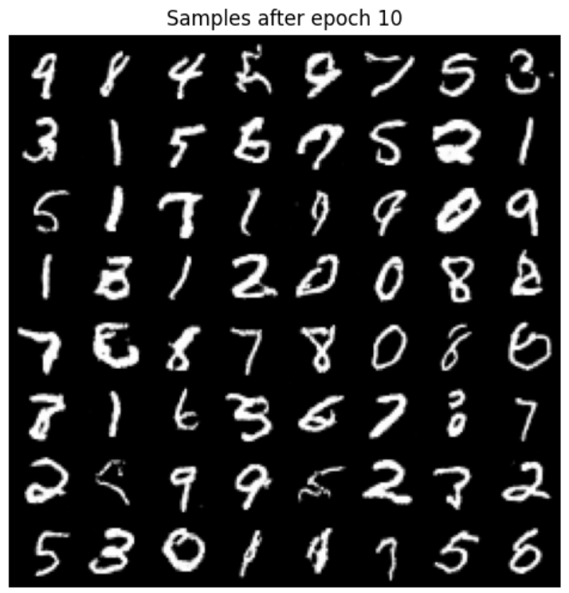
Part 2.4: Adding Class-Conditioning to the UNet
I then add class conditioning by passing a one-hot digit label
c through additional FCBlocks and using their
outputs to modulate the unflatten and upsampling layers. To enable
classifier-free guidance, I randomly drop class conditioning with
probability puncond = 0.1 during training by
zeroing out c.

Part 2.5: Training the Class-Conditioned UNet
Using the class-conditioned model, I generate digits with classifier-free guidance (e.g., γ = 5). For each class 0–9, I sample
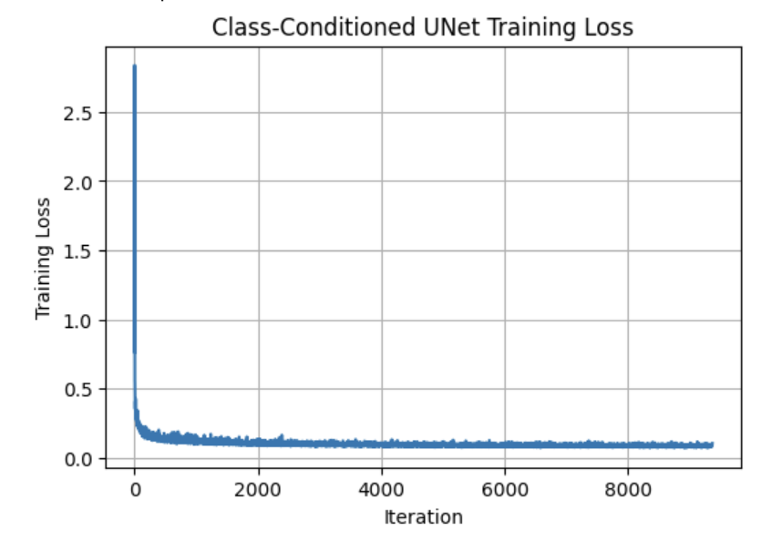
Part 2.6: Sampling from the Class-Conditioned UNet
Using the class-conditioned model, I generate digits with classifier-free guidance (e.g., γ = 5). For each class 0–9, I sample multiple images and compare results after different training epochs, as well as with and without the learning-rate scheduler.